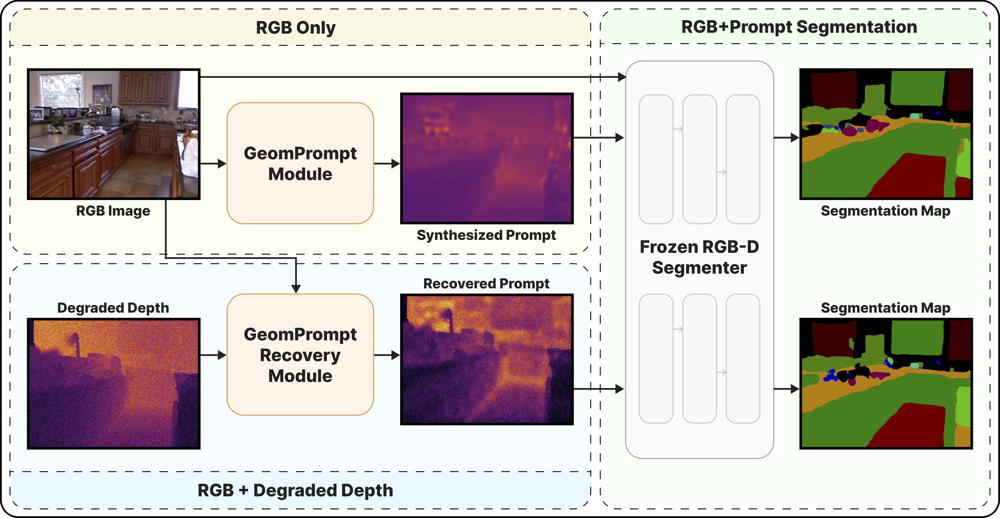
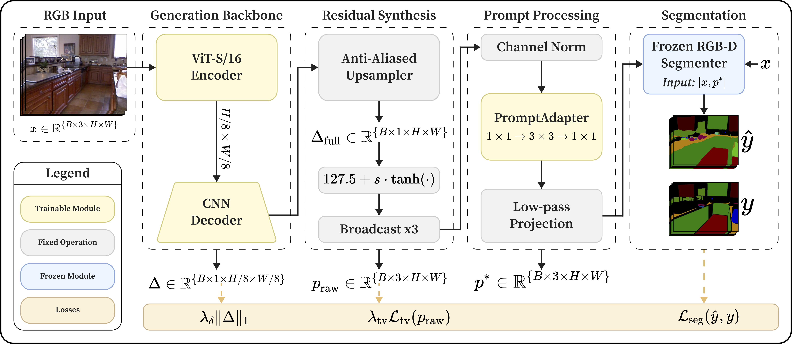
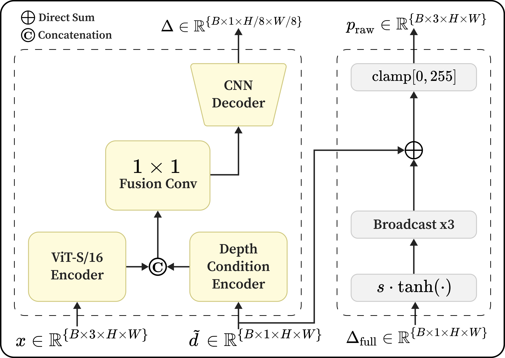
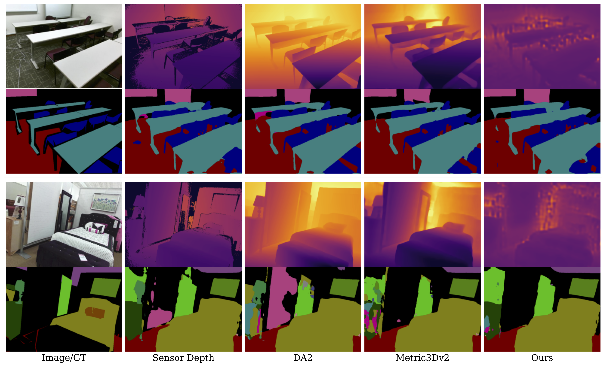
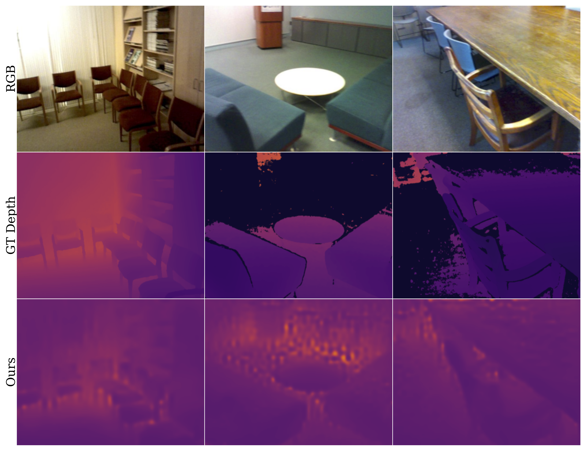
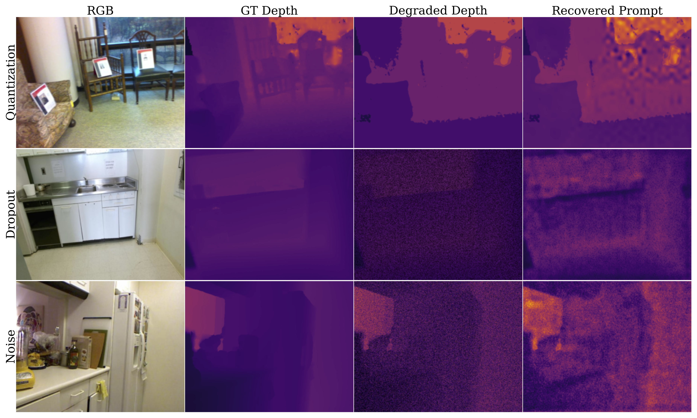
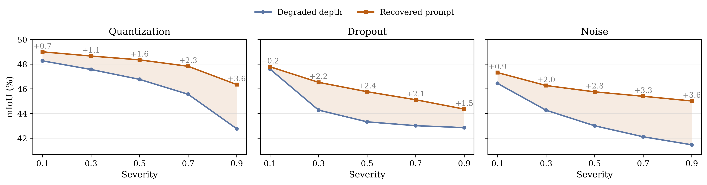
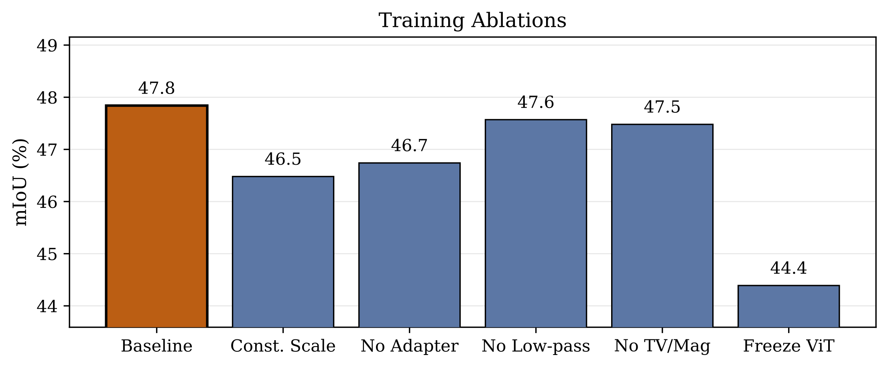

Abstract
Multimodal perception systems for robotics and embodied AI often assume reliable RGB-D sensing, but in practice, depth is frequently missing, noisy, or corrupted. We thus present GeomPrompt, a lightweight cross-modal adaptation module that synthesizes a task-driven geometric prompt from RGB alone for the fourth channel of a frozen RGB-D semantic segmentation model, without depth supervision. We further introduce GeomPrompt-Recovery, an adaptation module that compensates for degraded depth by predicting the fourth channel correction relevant for the frozen segmenter. Both modules are trained solely with downstream segmentation supervision, enabling recovery of the geometric prior useful for segmentation, rather than estimating depth signals. On SUN RGB-D, GeomPrompt improves over RGB-only inference by +6.1 mIoU on DFormer and +3.0 mIoU on GeminiFusion, while remaining competitive with strong monocular depth estimators. For degraded depth, GeomPrompt-Recovery consistently improves robustness, yielding gains up to +3.6 mIoU under severe depth corruptions. GeomPrompt is also substantially more efficient than monocular depth baselines, reaching 7.8 ms latency versus 38.3 ms and 71.9 ms. These results suggest that task-driven geometric prompting is an efficient mechanism for cross-modal compensation under missing and degraded depth inputs in RGB-D perception.
Method Overview

(a) Overview of the GeomPrompt architecture.

(b) Depth handling in GeomPrompt-Recovery.
Missing Depth (GeomPrompt)
Given RGB input \(x\), the module predicts a task-driven prompt \(p^*\) and feeds \(S(x, p^*)\) into a frozen RGB-D segmenter.
Degraded Depth (GeomPrompt-Recovery)
Given RGB and corrupted depth \(\tilde{d}\), the module predicts a bounded residual correction and produces a recovered prompt used by the same frozen segmenter.
Quantitative Results
| Method | DFormer mIoU | DFormer PA | GeminiFusion mIoU | GeminiFusion PA |
|---|---|---|---|---|
| GT Depth (Upper Bound) | 51.2 | 83.4 | 52.7 | 82.8 |
| RGB-only | 41.7 | 78.3 | 43.4 | 78.8 |
| Depth Anything 2 | 44.0 | 80.8 | 47.7 | 81.4 |
| Depth Anything 2 [Hypersim] | 47.5 | 81.8 | 44.5 | 79.6 |
| Metric3Dv2 | 46.6 | 81.8 | 46.6 | 80.6 |
| GeomPrompt | 47.8 | 81.6 | 46.4 | 80.3 |
GeomPrompt improves over RGB-only by +6.1 mIoU on DFormer and +3.0 mIoU on GeminiFusion.
Qualitative Results



Recovery Under Degraded Depth

| Degradation | Mean mIoU Gain | High-Severity Gain |
|---|---|---|
| Quantization | +1.4 | +2.3 |
| Dropout | +2.0 | +1.5 |
| Noise | +2.5 | +3.6 |
Recovered gains across different degradation types.
Efficiency
| Model | Latency (ms) | GFLOPs | Params (M) |
|---|---|---|---|
| Depth Anything 2 | 38.3 | 280.7 | 97.5 |
| Metric3Dv2 | 71.9 | 315.2 | 37.5 |
| GeomPrompt | 7.8 | 44.0 | 23.4 |
Efficiency comparison across methods. Lower is better.
Ablations and Controls

| Method | DFormer | GeminiFusion |
|---|---|---|
| RGB-only | 41.7 | 43.4 |
| Luminance Gray | 25.4 | 43.2 |
| Laplacian Edges | 40.3 | 42.4 |
| Scharr | 39.8 | 43.0 |
| Canny | 38.6 | 43.5 |
| GeomPrompt | 47.8 | 46.4 |
Naive baselines and references, separated by segmenter. Best results in each segmenter group are in bold.
Conclusion
In this work, we presented GeomPrompt and GeomPrompt-Recovery as lightweight cross-modal adaptation modules for RGB-D perception under missing and degraded depth. Instead of reconstructing metric depth, the method learns task-driven geometric prompts from downstream supervision alone, enabling a frozen multimodal segmenter to remain effective when one sensing stream is unavailable or corrupted. GeomPrompt improves over RGB-only inference while remaining competitive with monocular depth estimators, and GeomPrompt-Recovery improves robustness under simulated sensor failures. These results suggest that task-driven cross-modal compensation can be a practical strategy for robust multimodal segmentation in embodied systems, especially when real-world deployment requires efficiency and graceful degradation under unreliable sensing. Future work could study whether this prompting view extends to other multimodal perception tasks useful for embodied AI, such as mapping, navigation, or manipulation.
BibTeX
If you find our work useful, please consider citing it.
@InProceedings{Jaganathan_2026_CVPR,
author = {Jaganathan, Krishna and Vela, Patricio},
title = {GeomPrompt: Geometric Prompt Learning for RGB-D Semantic Segmentation Under Missing and Degraded Depth},
booktitle = {Proceedings of the IEEE/CVF Conference on Computer Vision and Pattern Recognition (CVPR) Workshops},
month = {June},
year = {2026},
pages = {8268-8278}
}